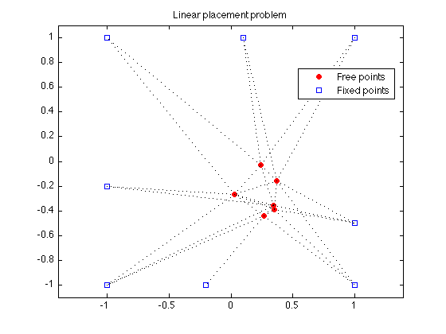
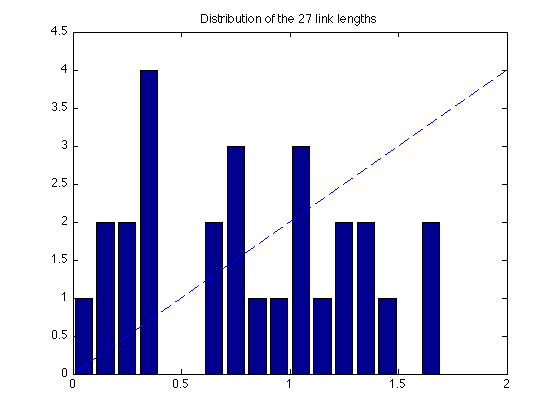

% Section 8.7.3, Boyd & Vandenberghe "Convex Optimization" % Original by Lieven Vandenberghe % Adapted for CVX by Joelle Skaf - 10/24/05 % (a figure is generated) % % Placement problem with 6 free points, 8 fixed points and 27 links. % The coordinates of the free points minimize the sum of the Euclidean % lengths of the links, i.e. % minimize sum_{i<j) h(||x_i - x_j||) % where h(z) = z. linewidth = 1; % in points; width of dotted lines markersize = 5; % in points; marker size % Input Data fixed = [ 1 1 -1 -1 1 -1 -0.2 0.1; % coordinates of fixed points 1 -1 -1 1 -0.5 -0.2 -1 1]'; M = size(fixed,1); % number of fixed points N = 6; % number of free points % first N columns of A correspond to free points, % last M columns correspond to fixed points A = [ 1 0 0 -1 0 0 0 0 0 0 0 0 0 0 1 0 -1 0 0 0 0 0 0 0 0 0 0 0 1 0 0 0 -1 0 0 0 0 0 0 0 0 0 1 0 0 0 0 0 -1 0 0 0 0 0 0 0 1 0 0 0 0 0 0 -1 0 0 0 0 0 0 1 0 0 0 0 0 0 0 0 0 -1 0 0 0 1 0 0 0 0 0 0 0 0 0 0 0 0 -1 0 1 -1 0 0 0 0 0 0 0 0 0 0 0 0 1 0 -1 0 0 0 0 0 0 0 0 0 0 0 1 0 0 0 -1 0 0 0 0 0 0 0 0 0 1 0 0 0 0 0 -1 0 0 0 0 0 0 0 1 0 0 0 0 0 0 -1 0 0 0 0 0 0 1 0 0 0 0 0 0 0 0 0 0 -1 0 0 0 1 -1 0 0 0 0 0 0 0 0 0 0 0 0 1 0 0 0 0 -1 0 0 0 0 0 0 0 0 1 0 0 0 0 0 0 0 -1 0 0 0 0 0 0 1 -1 0 0 0 0 0 0 0 0 0 0 0 0 1 0 0 0 0 -1 0 0 0 0 0 0 0 0 1 0 0 0 0 0 -1 0 0 0 0 0 0 0 1 0 0 0 0 0 0 0 -1 0 0 0 0 0 1 0 -1 0 0 0 0 0 -1 0 0 % error in data!!! 0 0 0 0 1 -1 0 0 0 0 0 0 0 0 0 0 0 0 1 0 -1 0 0 0 0 0 0 0 0 0 0 0 1 0 0 0 0 -1 0 0 0 0 0 0 0 0 1 0 0 0 0 0 0 0 0 -1 0 0 0 0 0 1 0 0 -1 0 0 0 0 0 0 0 0 0 0 1 0 0 0 0 -1 0 0 0 ]; nolinks = size(A,1); % number of links fprintf(1,'Computing the optimal locations of the 6 free points...'); cvx_begin variable x(N+M,2) minimize ( sum(norms( A*x,2,2 ))) x(N+[1:M],:) == fixed; cvx_end fprintf(1,'Done! \n'); % Plots free_sum = x(1:N,:); figure(1); dots = plot(free_sum(:,1), free_sum(:,2), 'or', fixed(:,1), fixed(:,2), 'bs'); set(dots(1),'MarkerFaceColor','red'); hold on legend('Free points','Fixed points','Location','Best'); for i=1:nolinks ind = find(A(i,:)); line2 = plot(x(ind,1), x(ind,2), ':k'); hold on set(line2,'LineWidth',linewidth); end axis([-1.1 1.1 -1.1 1.1]) ; axis equal; title('Linear placement problem'); % print -deps placement-lin.eps figure(2) all = [free_sum; fixed]; bins = 0.05:0.1:1.95; lengths = sqrt(sum((A*all).^2')'); [N2,hist2] = hist(lengths,bins); bar(hist2,N2); hold on; xx = linspace(0,2,1000); yy = 2*xx; plot(xx,yy,'--'); axis([0 2 0 4.5]); hold on plot([0 2], [0 0 ], 'k-'); title('Distribution of the 27 link lengths'); % print -deps placement-lin-hist.eps
Computing the optimal locations of the 6 free points...
Calling Mosek 9.1.9: 81 variables, 39 equality constraints
For improved efficiency, Mosek is solving the dual problem.
------------------------------------------------------------
MOSEK Version 9.1.9 (Build date: 2019-11-21 11:32:15)
Copyright (c) MOSEK ApS, Denmark. WWW: mosek.com
Platform: MACOSX/64-X86
Problem
Name :
Objective sense : min
Type : CONIC (conic optimization problem)
Constraints : 39
Cones : 27
Scalar variables : 81
Matrix variables : 0
Integer variables : 0
Optimizer started.
Presolve started.
Linear dependency checker started.
Linear dependency checker terminated.
Eliminator started.
Freed constraints in eliminator : 0
Eliminator terminated.
Eliminator - tries : 1 time : 0.00
Lin. dep. - tries : 1 time : 0.00
Lin. dep. - number : 0
Presolve terminated. Time: 0.00
Problem
Name :
Objective sense : min
Type : CONIC (conic optimization problem)
Constraints : 39
Cones : 27
Scalar variables : 81
Matrix variables : 0
Integer variables : 0
Optimizer - threads : 8
Optimizer - solved problem : the primal
Optimizer - Constraints : 12
Optimizer - Cones : 27
Optimizer - Scalar variables : 81 conic : 81
Optimizer - Semi-definite variables: 0 scalarized : 0
Factor - setup time : 0.00 dense det. time : 0.00
Factor - ML order time : 0.00 GP order time : 0.00
Factor - nonzeros before factor : 58 after factor : 70
Factor - dense dim. : 0 flops : 9.88e+02
ITE PFEAS DFEAS GFEAS PRSTATUS POBJ DOBJ MU TIME
0 0.0e+00 2.0e+00 2.8e+01 0.00e+00 0.000000000e+00 -2.700000000e+01 1.0e+00 0.00
1 7.4e-16 5.4e-01 6.0e+00 1.54e-01 -1.422654910e+01 -2.497615423e+01 2.7e-01 0.01
2 5.3e-16 1.1e-01 6.4e-01 7.12e-01 -2.001439808e+01 -2.254326248e+01 5.6e-02 0.01
3 5.6e-16 1.9e-02 4.5e-02 9.26e-01 -2.155200568e+01 -2.198765478e+01 9.4e-03 0.01
4 1.4e-15 3.4e-03 3.5e-03 9.87e-01 -2.183378074e+01 -2.191307478e+01 1.7e-03 0.01
5 5.6e-15 1.7e-04 3.9e-05 9.97e-01 -2.190425308e+01 -2.190826316e+01 8.6e-05 0.01
6 2.2e-14 4.2e-06 1.5e-07 1.00e+00 -2.190816528e+01 -2.190826322e+01 2.1e-06 0.01
7 1.9e-13 2.9e-07 2.8e-09 1.00e+00 -2.190825700e+01 -2.190826386e+01 1.5e-07 0.01
8 2.3e-13 3.4e-08 1.1e-10 1.00e+00 -2.190826300e+01 -2.190826379e+01 1.7e-08 0.01
9 8.2e-13 5.3e-09 6.8e-12 1.00e+00 -2.190826364e+01 -2.190826377e+01 2.7e-09 0.01
Optimizer terminated. Time: 0.01
Interior-point solution summary
Problem status : PRIMAL_AND_DUAL_FEASIBLE
Solution status : OPTIMAL
Primal. obj: -2.1908263644e+01 nrm: 1e+00 Viol. con: 1e-12 var: 0e+00 cones: 0e+00
Dual. obj: -2.1908263768e+01 nrm: 2e+00 Viol. con: 0e+00 var: 9e-09 cones: 0e+00
Optimizer summary
Optimizer - time: 0.01
Interior-point - iterations : 9 time: 0.01
Basis identification - time: 0.00
Primal - iterations : 0 time: 0.00
Dual - iterations : 0 time: 0.00
Clean primal - iterations : 0 time: 0.00
Clean dual - iterations : 0 time: 0.00
Simplex - time: 0.00
Primal simplex - iterations : 0 time: 0.00
Dual simplex - iterations : 0 time: 0.00
Mixed integer - relaxations: 0 time: 0.00
------------------------------------------------------------
Status: Solved
Optimal value (cvx_optval): +21.9083
Done!
 